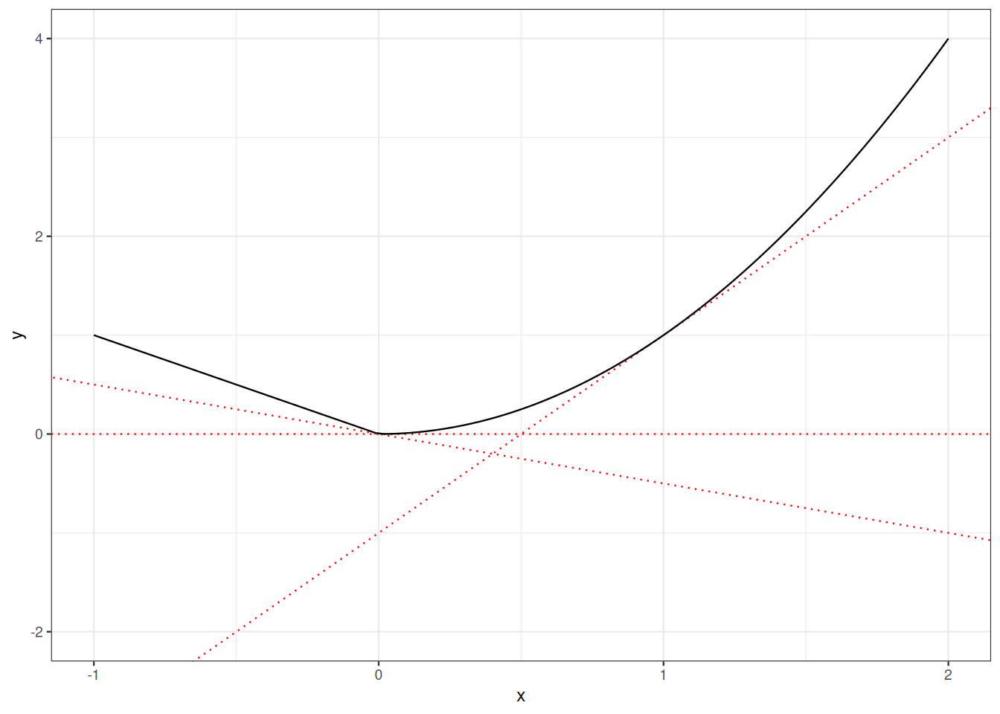
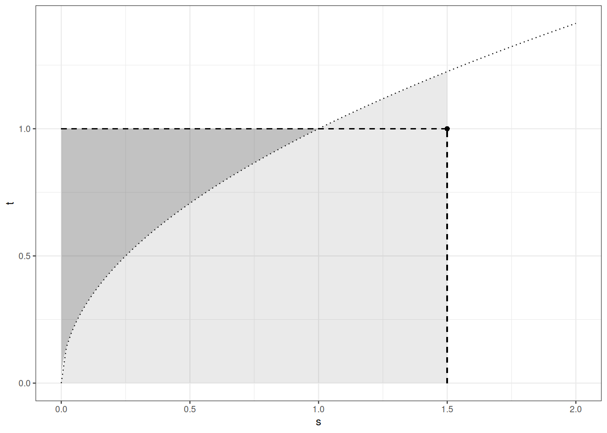

4 Des intégrales à l’espérance et aux moments
4.1 Feuille de route
Dans Section 4.2), nous relions la notion d’espérance d’une variable aléatoire à celle d’intégrale. Le théorème de transfert ( Théorème 4.1) est un outil essentiel pour caractériser les lois images.
Dans Section 4.3, nous énonçons, démontrons et illustrons l’inégalité de Jensen. Cette inégalité permet d’obtenir facilement des majorations de l’espérance de fonctions convexes de variables aléatoires réelles. C’est l’occasion de rappeler les bases de la convexité.
Dans Section 4.4, nous portons une attention particulière à la variance. Nous énonçons plusieurs caractérisations de la variance.
Dans Section 4.5
Dans Section 4.7
4.2 Espérance
L’espérance d’une variable aléatoire réelle est une intégrale (au sens de Lebesgue) par rapport à une mesure de probabilité. Il faut se familiariser avec la notation probabiliste.
L’énoncé suivant, appelé formule de transfert, permet de calculer la densité d’une loi image ou de simplifier le calcul d’une espérance.
Preuve. Supposons d’abord que \(h= \mathbb{I}_B\) où \(C \in \mathcal{G}\). Alors
\[ \begin{array}{rl} \mathbb{E} h(Y) & = \int_{\mathcal{Y}} \mathbb{I}_B(y) \, \mathrm{d}Q(y) \\ & = Q(B) \\ & = P \circ f^{-1}(B) \\ & = P \Big\{ x : f(x) \in B \Big\} \\ & = P \Big\{ x : h \circ f(x) =1 \Big\} \\ & = \int_{\mathcal{X}} h \circ f(x) \mathrm{d}P(x) \\ & = \mathbb{E} h\circ f(X) \, . \end{array} \]
Par linéarité, la formule de transfert vaut alors pour toutes les fonctions simples de \(\mathcal{Y}\) vers \(\mathbb{R}\). Par la définition de l’intégrale de Lebesgue, elle vaut pour les fonctions mesurables non négatives. L’argument de décomposition habituel achève la preuve.
Il est clair que l’espérance d’une variable aléatoire ne dépend que de la loi de cette variable.
4.3 Inégalité de Jensen
Les outils de théorie de l’intégration que nous avons revus servent à calculer ou approximer des intégrales et des espérances. Le théorème suivant évite les calculs et permet de comparer des espérances.
L’inégalité de Jensen est un outil central en théorie de l’information, en statistique et dans une large part de la théorie des probabilités. Elle traduit l’interaction entre convexité et espérance.
Nous introduisons d’abord un minimum de théorie et de notation sur la convexité.
Une fonction continue est semi-continue inférieurement. La réciproque est fausse. Si \(A \subseteq \mathcal{X}\) est un ouvert, alors \(\mathbb{I}_A\) est semi-continue inférieurement mais, sauf si elle est constante, elle n’est pas continue au bord de \(A.\)
Soit \(C\) une partie convexe d’un espace vectoriel (topologique réel), et \(\overline{C}\) l’adhérence de \(C\). Montrer que \(\overline{C}\) et \(\overline{C} \setminus C\) sont convexes.
Une partie convexe peut n’être ni fermée ni ouverte. Donner des exemples.
Dans la définition suivante, nous considérons des fonctions d’un espace vectoriel vers \(\mathbb{R} \cup \{+\infty\}\).
Le résultat suivant garantit que toute fonction convexe semi-continue inférieurement admet une représentation duale. Cette représentation duale est un outil précieux pour comparer les espérances de variables aléatoires.
Exemple 4.1 Les paires duales suivantes seront utilisées à plusieurs reprises.
- si \(f(x) = \frac{|x|^p}{p}\) (\(p> 1\)), alors \(f^*(y)= \frac{|y|^q}{q}\) où \(q=p/(p-1)\).
- si \(f(x) = |x|\), alors \(f^*(y)= 0\) pour \(y \in [-1,1]\) et \(\infty\) pour \(|y|>1\).
- si \(f(x) = \exp(x)\), alors \(f^*(y) = y \log y - y\) pour \(y>0\), \(f^*(y)=\infty\) pour \(y<0\)
Preuve. Le fait que \(f^*\) soit à valeurs dans \(\mathbb{R} \cup \{\infty\}\) et convexe est immédiat.
Pour la semi-continuité inférieure, supposons \(y_n \to y\), avec \(y_n \in \operatorname{Dom}(f^*)\) et \(f^*(y) > \liminf_n f^*(y_n)\).
Supposons d’abord \(y \in \operatorname{Dom}(f^*)\). Alors, pour \(m\) assez grand et un certain \(x \in \operatorname{Dom}(f)\),
\[ f^*(y) \geq xy - f(x) -\frac{1}{m} > \liminf_n f^*(y_n) \geq \liminf_n y_n x -f(x) = yx -f(x) \]
ce qui est contradictoire.
Supposons maintenant \(y \not\in \operatorname{Dom}(f^*)\) et \(\liminf_n f^*(y_n) < \infty\). Extrayons une sous-suite \((y_{m_n})_n\) telle que \(\lim_n f^*(y_{m_n}) = \liminf_n f^*(y_n)\). Il existe \(x \in \operatorname{Dom}(f)\) tel que \[ f^*(y) > xy -f(x) > \liminf_n f^*(y_n) = \lim_n f^*(y_{m_n}) \geq \lim_n xy_{m_n} -f (x) = xy - f(x) \]
ce qui est encore contradictoire.
Le fait que \(y\) soit un sous-gradient de \(f\) en \(x\) si \(f^*(y)= xy - f(x)\) est une reformulation de la définition des sous-gradients.
Notons que si \(x \in \operatorname{Dom}(f)\) et \(y\in \operatorname{Dom}(f^*)\), alors \(f(x)+f^*(y)\geq xy\).
Cette observation entraîne \((f^*)^*(x)\leq f(x)\) pour tout \(x \in \operatorname{Dom}(f)\). S’il existait \(x \in \operatorname{Dom}(f)\) avec \((f^*)^*(x)>x\), il existerait \(y \in \operatorname{Dom}(f^*)\) tel que \(xy - f^*(y) > f(x)\), ce qui est impossible.
Pour prouver \((f^*)^*(x)\geq f(x)\) pour tout \(x \in \operatorname{Dom}(f)\), nous utilisons la convexité, la semi-continuité inférieure de \(f\) et \(f^*\), et la fermeture de \(\operatorname{Dom}(f)\). Sous ces conditions, tout point \(x\) de \(\operatorname{Dom}(f)\) admet un sous-gradient \(y\) et cela entraîne \(f(x) + f^*(y)= xy\).
Remarque 4.1. Il est possible de définir \(f^*\) par \(f^*(y) =\sup_x xy -f(x)\) même si \(f\) n’est pas convexe ni semi-continue inférieurement. La fonction \(f^*\) conserve la convexité et la semi-continuité inférieure. Mais \(f \neq (f^{*})^*\) : on n’obtient que \(f \geq (f^{*})^*\). En effet, \((f^{*})^*\) est la plus grande minorante convexe de \(f\).
Au regard de la définition de la convexité et du fait que prendre une espérance prolonge l’idée de combinaison convexe, l’inégalité de Jensen n’est pas surprenante.
Preuve. \[ \begin{array}{rl} \mathbb{E} f(X) & = \mathbb{E} (f^*)^*(X) \\ & = \mathbb{E} \Big[ \sup_y \Big( yX - f^*(y)\Big)\Big] \\ & \geq \sup_y \Big( y \mathbb{E} X - f^*(y)\Big) \\ & = (f^*)^*\Big( \mathbb{E} X \Big) \\ & = f\Big( \mathbb{E} X \Big) \, . \end{array} \]
Nous verrons de nombreuses applications de l’inégalité de Jensen :
- comparaison de l’échantillonnage avec remise et sans remise (comparaison des queues binomiale et hypergéométrique)
- inégalités de Cauchy-Schwarz et de Hölder
- dérivation d’inégalités maximales
- non-négativité de l’entropie relative
- dérivation des inégalités d’Efron-Stein-Steele
- …
4.4 Variance
La variance (lorsqu’elle est définie) est un indice de dispersion de la loi d’une variable aléatoire.
Il reste à vérifier que les trois membres de droite sont finis si l’un d’eux l’est, et qu’ils sont tous égaux lorsqu’ils sont finis.
Preuve. Supposons \(\mathbb{E}X^2 < \infty\). Comme \(|X| \leq \frac{X^2}{2} + \frac{1}{2}\), cela entraîne \(\mathbb{E} |X|<\infty\). Si \(\mathbb{E}X^2 < \infty\), alors \(\mathbb{E}|X|\) l’est aussi. Le membre de droite de la troisième ligne est fini si \(\mathbb{E}X^2 < \infty\). Comme \((x-b)^2 \leq 2 x^2 + 2 b^2\) pour tous \(x,b\), les membres de droite de la première ligne et l’infimum de la deuxième ligne sont finis lorsque \(\mathbb{E} X^2 <\infty.\)
Comme \(X^2 \leq 2 (X- \mathbb{E}X)^2 + 2 (\mathbb{E}X)^2\), \(\mathbb{E}X^2<\infty\) si \(\mathbb{E}\left[(X - \mathbb{E}X)^2\right] <\infty.\)
Supposons maintenant \(\mathbb{E}X^2 < \infty\). \[ \begin{array}{rl} \mathbb{E}\left[(X - a)^2\right] & = \mathbb{E}\left[(X - \mathbb{E}X - (a-\mathbb{E}X))^2\right] \\ & = \mathbb{E}\left[(X- \mathbb{E}X)^2 - 2 \mathbb{E}[(X-\mathbb{E}X)](a-\mathbb{E}X) + (a-\mathbb{E}X)^2 \right]\\ & = \mathbb{E}\left[(X- \mathbb{E}X)^2\right] + (a-\mathbb{E}X)^2 \, . \end{array} \]
Comme \((a- \mathbb{E}X)^2\geq 0\), nous avons établi que \(\mathbb{E}\left[(X - \mathbb{E}X)^2\right] = \inf_{a \in \mathbb{R}} \mathbb{E}\left[(X - a)^2\right]\). De plus, l’infimum est un minimum, atteint en un unique point \(\mathbb{E}X\).
Remarque 4.2. Les première et deuxième caractérisations de la variance affirment que l’espérance minimise l’erreur quadratique moyenne. Un fait d’une grande importance en statistique.
4.5 Moments d’ordre supérieur
Dans cette section, nous relions \(\mathbb{E} |X|^p\) et \(\mathbb{E} |X|^q\) pour différentes valeurs de \(p, q \in \mathbb{R}_+\). Notre point de départ est un petit résultat technique d’analyse réelle.
Preuve. Si \(p\) et \(q\) sont conjugués, alors \(q= p/(p-1)\) et \((p-1)(q-1)=1\).
Il suffit de vérifier que, pour tous \(x,y>0\),
\[\frac{x^p}{p} \geq xy - \frac{y^q}{q} \, .\]
Fixons \(x>0\) et considérons la fonction sur \([0,\infty)\) définie par
\[z \mapsto xz - \frac{z^q}{q} \,.\]
Cette fonction est dérivable, de dérivée \(x - z^{q-1} = x - z^{1/(p-1)}\). Elle atteint son maximum en \(z=x^{p-1}\), et ce maximum vaut
\[x x^{p-1} - \frac{x^{q(p-1)}}{q} = x^p - \frac{x^p}{q} = \frac{x^p}{p} \, .\]
Figure 4.2 propose une preuve graphique de l’inégalité de Young.

Remarque 4.3. Un cas particulier de l’inégalité de Young s’obtient en prenant \(p=q=2\).
Nous sommes maintenant en mesure de démontrer trois inégalités fondamentales : Cauchy-Schwarz, Hölder et Minkowski.
Preuve. Si \(\sqrt{\mathbb{E}X^2}=0\) ou \(\sqrt{\mathbb{E}Y^2}=0\), l’inégalité est trivialement satisfaite.
Sans perte de généralité, supposons \(\sqrt{\mathbb{E}X^2}>0\) et \(\sqrt{\mathbb{E}Y^2}>0\). Alors, puisque \(ab \leq a^2/2 + b^2/2\) pour tous réels \(a,b\), partout,
\[ \frac{|XY|}{\sqrt{\mathbb{E}X^2}\sqrt{\mathbb{E}Y^2}} \leq \frac{|X|^2}{2\mathbb{E}X^2} + \frac{|Y|^2}{2\mathbb{E}Y^2} \,. \]
En prenant l’espérance des deux côtés, on obtient le résultat voulu.
Théorème 4.4 nous dit que si \(X\) et \(Y\) sont de carré intégrables, alors \(XY\) est intégrable.
L’inégalité de Hölder généralise celle de Cauchy-Schwarz. En effet, l’inégalité de Cauchy-Schwarz n’est que l’inégalité de Hölder pour \(p=q=2\) (\(2\) est son propre conjugué).
Preuve. Si \(\mathbb{E}|X|^p=0\) ou \(\mathbb{E}|Y|^q=0\), l’inégalité est trivialement satisfaite.
Supposons \(\mathbb{E}|X|^p > 0\) et \(\mathbb{E}|Y|^q > 0\).
Suivons la preuve de l’inégalité de Cauchy-Schwarz, en remplaçant \(2 ab \leq a^2 +b^2\) par l’inégalité de Young :
\[ab \leq \frac{|a|^p}{p} + \frac{|b|^q}{q}\qquad \forall a,b \in \mathbb{R}\] si \(1/p+ 1/q=1\).
L’inégalité ci-dessous découle de l’inégalité de Young et de la monotonie de l’espérance :
\[ \begin{array}{rl} \frac{\mathbb{E}|XY|}{\mathbb{E}[|X|^p]^{1/p}\mathbb{E}[|Y|^q]^{1/q}} & = \mathbb{E}\Big[\frac{|X|}{\mathbb{E}[|X|^p]^{1/p}} \frac{|Y|}{\mathbb{E}[|Y|^q]^{1/q}} \Big] \\ & \leq \mathbb{E}\Big[\frac{|X|^p}{p \mathbb{E}[|X|^p]} + \frac{|Y|^q}{q \mathbb{E}[|Y|^q]} \\ & = \frac{1}{p} + \frac{1}{q} \\ & = 1 \, . \end{array} \]
Pour \(p \in [0, \infty)\), \(X \mapsto (\mathbb{E}|X|^p)^{1/p}\) définit une semi-norme sur l’ensemble des variables aléatoires pour lesquelles \((\mathbb{E}|X|^p)^{1/p}\) est fini. L’inégalité de Minkowski affirme que \(X \mapsto (\mathbb{E}|X|^p)^{1/p}\) satisfait l’inégalité triangulaire.
La preuve de Théorème 4.6 découle de l’inégalité de Hölder (Théorème 4.5).
Preuve. L’inégalité ci-dessous découle aussi de l’inégalité triangulaire sur \(\mathbb{R}\) et de la monotonie. La dernière égalité vient de la linéarité de l’espérance :
\[ \begin{array}{rl} \mathbb{E} \Big[ |X+Y|^p\Big] & \leq \mathbb{E} \Big[ (|X|+|Y|) \times |X+Y|^{p-1}\Big] \\ & = \mathbb{E} \Big[ |X| \times |X+Y|^{p-1}\Big] + \mathbb{E} \Big[ |Y| \times |X+Y|^{p-1}\Big] \, . \end{array} \]
Cela suffit pour traiter le cas \(p=1\).
Désormais, supposons \(p>1\). L’inégalité de Hölder entraîne l’inégalité suivante, et une majoration analogue pour \(\mathbb{E} \Big[ |Y| \times |X+Y|^{p-1}\Big]\).
\[ \begin{array}{rl} \mathbb{E} \Big[ |X| \times |X+Y|^{p-1}\Big] & \leq \mathbb{E} \Big[ |X|^p\Big]^{1/p} \times \mathbb{E} \Big[ |X+Y|^{p}\Big]^{(p-1)/p} \, \end{array} \]
En sommant les deux majorations, nous obtenons
\[ \begin{array}{rl} \mathbb{E} \Big[ |X+Y|^p\Big] & \leq \left(\mathbb{E} \Big[ |X|^p\Big]^{1/p} + \mathbb{E} \Big[ |Y|^p\Big]^{1/p}\right) \times \mathbb{E} \Big[ |X+Y|^{p}\Big]^{(p-1)/p} \, . \end{array} \]
Cela prouve l’inégalité de Minkowski pour \(p>1\).
\(square\)
4.6 Médiane et écart interquartile
Indices robustes et non robustes de position.
La médiane minimise l’écart absolu moyen.
Preuve. Supposons \(a<m\),
\[ \begin{array}{rl} \mathbb{E} \left[\Big| X - a \Big| - \Big| X - m \Big| \right] & = - (m-a) P(-\infty, a] + \int_{(a, m]} (2 X - (a+m)) \mathrm{d}P(x) + (m-a)P(m,\infty) \\ & \geq - (m-a) P(-\infty, a] - (m-a) P(a,m] + (m-a)P(m,\infty) \\ & = (m-a) \Big(P(m,\infty) - P(-\infty, m]\Big) \\ & = 0 \, . \end{array} \]
Le même raisonnement traite le cas \(a>m\) et permet de conclure.
En combinant trois des inégalités que nous venons de démontrer, nous pouvons établir un lien intéressant entre espérance, médiane et écart-type.
Les indices robustes et non robustes de position diffèrent au plus de l’écart-type, qui peut être infini.
Preuve. Par convexité de \(x \mapsto |x|\), nous avons
\[ \begin{array}{rl} \Big| m - \mathbb{E} X\Big| & \leq \mathbb{E} \Big| m - X\Big| \\ & \text{by Jensen's inequality} \\ & \leq \mathbb{E} \Big| \mathbb{E}X - X\Big| \\ & \text{the median minimizes the mean absolute error} \\ & \leq \left(\mathbb{E} \Big| \mathbb{E}X - X\Big|^2\right)^{1/2} \\ & \text{by Cauchy-Schwarz inequality.} \end{array} \]
Remarque 4.4. L’espérance et la médiane peuvent différer. D’abord, la médiane est toujours définie, tandis que l’espérance peut ne pas l’être. Pensez par exemple à la loi de Cauchy standard, de densité \(\frac{1}{\pi}\frac{1}{1+x^2}\) sur \(\mathbb{R}\). Si \(X\) suit une loi de Cauchy, alors \(\mathbb{E}|X|=\infty\). L’espérance n’est pas définie. Mais comme la densité est paire, \(X\) est symétrique (\(X\) et \(-X\) ont la même loi), ce qui implique que la médiane de (la loi de) \(X\) vaut \(0\).
Considérons la loi exponentielle de densité \(\exp(-x)\) sur \([0, \infty)\) : espérance \(1\), médiane \(\log(2)\), variance \(1\). Pour la loi exponentielle de densité \(\lambda \exp(-\lambda x)\), l’espérance vaut \(1/\lambda\), la médiane \(\log(2)/\lambda\), et la variance \(1/\lambda^2\). L’inégalité de Lévy n’apporte pas plus que ce que l’on peut calculer directement.
Enfin, considérons les lois Gamma de paramètre de forme \(p\) et d’intensité \(\lambda\). L’espérance vaut \(p/\lambda\), la variance \(p/\lambda^2\). La médiane n’est pas facile à calculer, mais l’on vérifie aisément qu’elle vaut \(g(p)/\lambda\), où \(g(p)\) est la médiane de la loi Gamma de paramètres \(p\) et \(1\). L’inégalité de Lévy nous dit que \(|g(p) - p|\leq \sqrt{p}\).
4.7 Espaces \(\mathcal{L}_p\) et \(L_p\)
Soit \(p \in [1, \infty)\). Soit \((\Omega, \mathcal{F}, P)\) un espace probabilisé. Définissons \(\mathcal{L}_p(\Omega, \mathcal{F}, P)\) (souvent abrégé en \(\mathcal{L}_p(P)\) ou même \(\mathcal{L}_p\) s’il n’y a pas d’ambiguïté) par
\[ \mathcal{L}_p(\Omega, \mathcal{F}, P) = \Big\{ X : X \text{ is a real random variable over } (\Omega, \mathcal{F}, P), \quad \mathbb{E}|X|^p < \infty \Big\} \, . \]
Posons \(\| X \|_p = \Big(\mathbb{E} |X|^p\Big)^{1/p}\).
Notons \(\mathcal{L}_0(\Omega, \mathcal{F}, P)\) l’espace vectoriel des variables aléatoires sur \((\Omega, \mathcal{F}, P)\).
Nous observons d’abord que les ensembles \(\mathcal{L}_p(\Omega, \mathcal{F}, P)\) forment une suite emboîtée.
Preuve. Supposons \(1 \leq p \leq q <\infty\). Comme \(x \mapsto x^{q/p}\) est convexe sur \([0, \infty)\), par l’inégalité de Jensen (Théorème 4.3), nous avons
\[ \begin{array}{rl} \mathbb{E} [|X|^p]^{q/p} & \leq \mathbb{E} [|X|^q] \,. \end{array} \]
Cela établit 1.) Et 2.) est une conséquence immédiate de 1.
Proposition 4.4 porte sur l’inclusion d’ensembles. Le théorème suivant résume plusieurs points : les ensembles \(\mathcal{L}_p\) sont des sous-espaces vectoriels de \(\mathcal{L}_0\), et ils sont complets en tant qu’espaces pseudo-métriques (pseudo-normés).
Remarque 4.5. Dans un espace pseudo-métrique, pour prouver qu’une suite de Cauchy converge, il suffit de vérifier la convergence d’une sous-suite.
En choisissant une sous-suite convenable, et en renumérotant éventuellement, on peut supposer \(\Big\| X_n - X_m \Big\|_p \leq 2^{- n \wedge m}\) pour tous \(n,m\).
Preuve. L’événement \(\left\{ \omega : \sum_n \mathbb{I}_{A_n}(\omega) = \infty \right\}\) coïncide avec \(\cap_n \cup_{m\geq n} A_n\) :
\[ P \left\{ \sum_n \mathbb{I}_{A_n}(\omega) = \infty\right\} = P(\cap_n \cup_{m\geq n} A_n) \, . \]
La suite \((\cup_{m\geq n} A_n)_n\) est décroissante : \(\lim_n \downarrow \cup_{m\geq n} A_n = \cap_n \cup_{m\geq n} A_n \,.\)
Par le lemme de Fatou,
\[ \begin{array}{rl} \mathbb{E} \lim_m \mathbb{I}_{\cup_{m\geq n} A_m} & = \mathbb{E} \liminf_n\mathbb{I}_{\cup_{m\geq n} A_m} \\ & \leq \liminf_n \mathbb{E} \mathbb{I}_{\cup_{m\geq n} A_m} \\ & \leq \liminf_n \sum_{m\geq n} P(A_m) \\ & = 0 \, . \end{array} \]
La dernière égalité vient du fait que les restes d’une série convergente tendent vers \(0\).
Preuve. Les points 1) et 2) découlent de l’inégalité de Minkowski. Cela entraîne que \(\|\cdot\|_p\) définit une pseudo-norme sur \(\mathcal{L}_p\). Si deux variables aléatoires \(X,Y\) de \(\mathcal{L}_p\) satisfont \(\| X- Y\|_p=0\), alors \(X=Y\) \(P\)-p.s.
Pour établir 3), il faut vérifier que la suite converge presque sûrement, et qu’une limite presque sûre appartient à \(\mathcal{L}_p\).
Définissons l’événement \(A_n\) par \[A_n = \Big\{ \omega : \Big| X_n(\omega) - X_{n+1}(\omega) \Big| > \frac{1}{n^2}\Big\} \, .\] Par l’inégalité de Markov, \[P(A_n) \leq \mathbb{E}\Big[n^{2p} \Big| X_n - X_m \Big|^p \Big] \leq n^{2p} 2^{-np} \, .\] Donc \(\sum_{n\geq 1} P(A_n) < \infty.\) Par le premier lemme de Borel-Cantelli, sur un événement \(E\) de probabilité \(1\), seulement un nombre fini de \(A_n\) se réalisent.
Si \(\omega \in E\), la condition \(\Big| X_n(\omega) - X_{n+1}(\omega) \Big| > \frac{1}{n^2}\) n’est réalisée que pour un nombre fini d’indices \(n\). Ainsi la suite réelle \((X_n(\omega))_n\) est de Cauchy. Elle admet une limite que nous notons \(X(\omega)\). Si \(\omega \not\in E\), convenons que \(X(\omega)=0.\) Sur \(\Omega\), nous avons \[X(\omega) = \lim_n \mathbb{I}_E(\omega) X(\omega) \, .\] Une limite de variables aléatoires est une variable aléatoire. Donc \(X\) est une variable aléatoire.
Il reste à vérifier que \(X \in \mathcal{L}_p\). Notons d’abord que
\[ \Big| \big\| X_m \big\|_p - \big\|X_n \big\|_p \Big| \leq \big\| X_m - X_n \big\|_p \,. \]
Ainsi \(\big(\big\|X_n \big\|_p \big)_n\) est une suite de Cauchy et converge vers une limite finie. Comme \[ |X(\omega)| \leq \liminf |X_n(\omega)| \]
par le lemme de Fatou \[ \mathbb{E} |X|^p \leq \liminf \mathbb{E} |X_n|^p < \infty\, . \]
Donc \(X \in \mathcal{L}_p\).
Enfin, vérifions que \(\lim_m \|X_n - X\|_p =0\). Par le lemme de Fatou encore,
\[ \mathbb{E} \Big| X - X_m \Big|^p \leq \liminf_n \mathbb{E} \Big| X_n - X_m \Big|^p \]
d’où
\[ \lim_m \mathbb{E} \Big| X - X_m \Big|^p \leq \lim_m \liminf_n \mathbb{E} \Big| X_n - X_m \Big|^p = 0 \, . \]
Remarque 4.6. Peut-on étendre la convergence presque sûre à toute la suite ? Ce n’est pas le cas. Considérons \(([0,1], \mathcal{B}([0,1]), P)\) où \(P\) est la loi uniforme. Pour \(k= j+ n(n-1)/2\), \(1\leq j\leq n\), posons \(X_n = \mathbb{I}_{[(j-1)/n, j/n]}\). La suite \(X_n\) converge vers \(0\) dans \(\mathcal{L}_p\) pour tout \(p \in [1, \infty)\). En effet \(\|X_k\|_p = n^{-p}\) pour \(k= j+ n(n-1)/2\), \(1\leq j\leq n\). Pour tout \(\omega \in [0,1]\), la suite \(X_n(\omega)\) oscille entre \(0\) et \(1\) une infinité de fois.
Les espaces \(\mathcal{L}_p\) nous offrent un pont entre probabilités et analyse. En analyse, le fait que \(\|\cdot \|_p\) ne soit qu’une pseudo-norme conduit à considérer les espaces \(L_p\). Les espaces \(L_p\) sont définis à partir des espaces \(\mathcal{L}_p\) en prenant des classes d’équivalence de variables aléatoires. Définissons la relation \(\equiv\) sur \(\mathcal{L}_p(\Omega, \mathcal{F}, P)\) par \(X \equiv X'\) ssi \(P\{X=X'\}=1\). Cette relation est une relation d’équivalence (réflexive, symétrique et transitive). Si \(X \equiv X'\) et \(Y \equiv Y'\), alors \(\|X -Y\|_p = \|X' -Y\|_p = \|X' - Y'\|_p\). \(L_p(\Omega, \mathcal{F}, P)\) est l’espace quotient de \(\mathcal{L}_p\) par la relation \(\equiv\). Nous avons le résultat fondamental suivant.
Cela permet finalement d’invoquer des théorèmes d’analyse fonctionnelle.